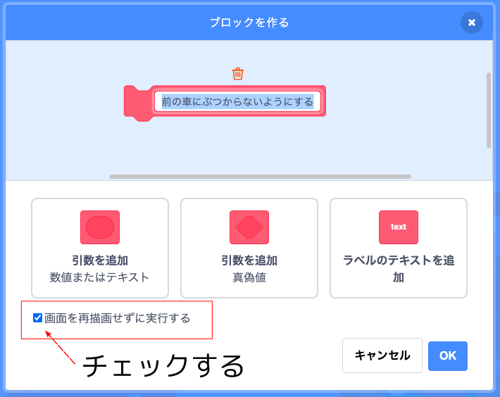
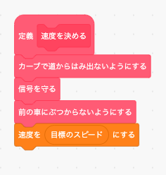
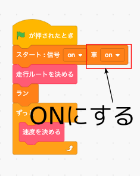
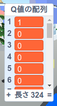
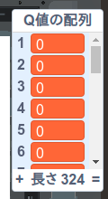
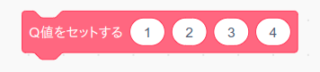

4. Q値の配列の作成
さてQ学習は車(エージェント)がある座標(状況)においてマップ(環境)からもらえる報酬が最大となる様な方向(行動)をトライ＆エラーを繰り返しながら学習していくアルゴリズムでした。具体的にはある座標で車がある方向を進んだらどれだけ報酬が貰えるのだろうかという予測値をQ学習は学習します。この報酬の予測値のことを「Q値」といいます。つまりQ学習はトライ＆エラーを繰り返しながらQ値を更新していくアルゴリズムだとも言えます。
さてこうなると Q 値を記録する場所を用意する必要が出てきます。通常のプログラミング言語では「配列」というテクニックを使ってQ値を記録するのですが、残念ながら Scratch では配列を使うことが出来ません。
そこで今回はリストを使って「Q値の配列(もどき)」を作ってみたいと思います。ただしリストを使った配列の作り方は複雑な数式が必要ですし、今回のセミナーの目的ともズレてますので、ここではブロックの並べ方を示すだけに留めておきたいと思います。
まずQ値の配列の元になる「Q値の配列」をリストとして作成します。
この「Q値の配列」を初期化して配列を作るプログラムは次の様になります。「Q値の配列を初期化する」ブロックをブロック定義から作って下さい。なおこのブロックは1度しか実行しませんので「画面を再描画せずに実行する」はチェックしてもしなくても結構です。
次は「Q値をセットする」ブロックをブロック定義から作ります。なおこのブロックは繰り返し実行されますので「画面を再描画せずに実行する」は必ずチェックして下さい。また「+」と「*」を間違わない様に気をつけてください。

次にある座標である行動をした時のQ値を求めるブロックを作成します。 まず「Q値」という変数を作成します。
次に「Q値を求める」ブロックをブロック定義から作ります。なおこのブロックは繰り返し実行されますので「画面を再描画せずに実行する」は必ずチェックして下さい。また「+」と「*」を間違わない様に気をつけてください。
では上で作った3つのブロックの動作確認をしましょう。
まず「スタート」ブロックを押してシミュレータをスタートします。

次に「Q値の配列を初期化する」ブロックを押してから「Q値の配列」の中身を表示して下さい。「マップの幅」x「マップの高さ」x4の長さで値が全て0のリスト(幅と高さが9の場合は9x9x4=324)が出来ていればOKです。
次に「Q値をセットする」ブロックをコード画面にひとつだけ配置して引数を次のように入力してからブロックを押して下さい。
このブロックは
車がX座標が1、Y座標が2の場所にいる時に下に移動(行動=3)した時のQ値を4にセットする
という意味になります。
次に「Q値を求める」ブロックをコード画面にひとつだけ配置して引数を次のように入力してからブロックを押して下さい。
このブロックは
車がX座標が1、Y座標が2の場所にいる時に下に移動(行動=3)した時のQ値を求めて変数「Q値」に入れる
という意味ですので、変数「Q値」の値が4となっていれば正常に動作しています。
うまく動きましたらX座標、Y座標、行動、Q値の数値を色々変えてもきちんと動作するか確認して下さい。